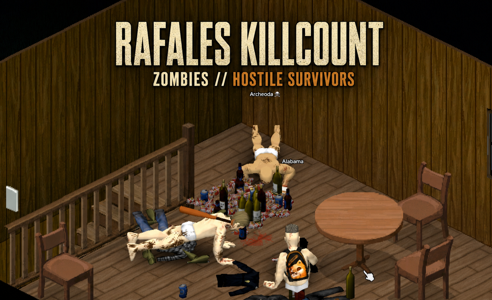

Rafales Killcount
The Knox Event changed everything. Every street, house and survivor can become part of your story — and every kill should count.
Rafales Killcount turns your survival experience into a clear progression journey. Keep your fight against the undead separate from your battles with hostile Knox Survivors, watch your reputation grow, and see your character evolve from an untested Greenhorn into a Cold-Blooded Legend.
All progress is shown directly in the character Info panel, so you can follow your legacy without adding another HUD element or cluttering your screen.

What does it add?
- Separate kill tracking: Zombie kills and hostile survivor kills are recorded independently.
- Accurate zombie count: Knox Survivor zombie shells are removed from the vanilla zombie total.
- Undead Rank: Progress through Greenhorn, Hardened, Veteran, Reaper and Cold-Blooded.
- Knox Threat Rank: Build your reputation from Unknown to Survivor, Hunter, Warlord and Legend.
- Hostile-only survivor count: Only Knox Survivors hostile to your player are counted.
- Character Info integration: Everything is visible in the familiar Info panel — no separate HUD required.
Undead Rank
- 0 - 299: Greenhorn - Learning to survive
- 300 - 599: Hardened - Seasoned survivor
- 600 - 899: Veteran - Battle-tested
- 900 - 1499: Reaper - The dead know your name
- 1500+: Cold-Blooded - While a real zombie is within 12 tiles, the player's panic value is repeatedly reset to 0.
Knox Threat Rank
- 0 - 19: Unknown
- 20 - 29: Survivor
- 30 - 99: Hunter
- 100 - 149: Warlord
- 150+: Legend
Visual Only Option
Want the ranks without changing gameplay balance? In Sandbox Options, open Rafales Killcount - Gameplay Effects and disable Enable Rank Gameplay Effects.
The kill counters and all ranks remain visible. Gameplay effects, including the Cold-Blooded panic effect, are disabled.
Requirements
- Project Zomboid Build 42.20
- Knox Survivors
Credits
Thanks to .exe, creator of Knox Survivors, for the support and permission.